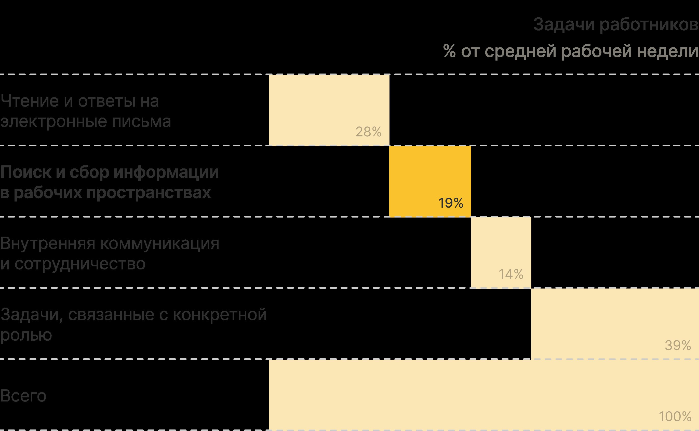
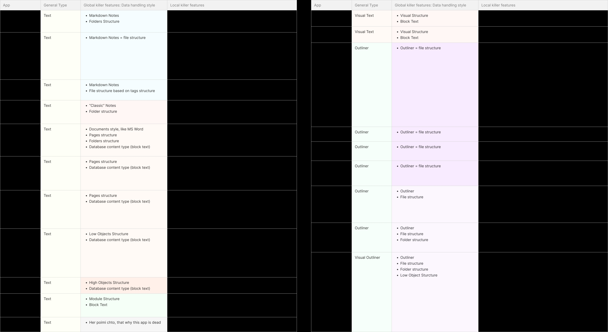
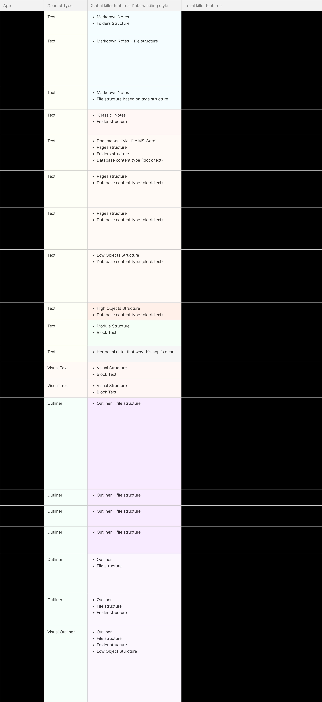

Цель проекта
Если попробовать описать Integrity в двух словах — это гибрид Notion, Miro и Wikipedia. Продукт для работы с информацией, который объединяет документ, канвас и сеть связей в одном пространстве. С самого начала мы стремились к более амбициозной цели. Мы хотели создать среду, в которой пользователь может мыслить свободно, не сталкиваясь с барьерами интерфейса, а наоборот, ощущая поддержку и усиление собственного мышления.
Мы стремились сделать Integrity не просто инструментом, а пространством, где идеи переходят в действия. Наша целевая аудитория состояла из дизайнеров, исследователей, продакт-менеджеров, преподавателей и команд, для которых работа со знаниями является частью повседневной деятельности. Мы хотели, чтобы продукт адаптировался под стиль мышления пользователя и не заставлял менять привычный подход.
Моя роль
Я присоединился к проекту как freelance-продуктовый дизайнер с задачей на один месяц. Спустя этот месяц я стал частью команды и занял позицию Senior Product Designer. Почти на всём протяжении работы я был единственным дизайнером и отвечал за:
- Формирование концепции продукта;
- Разработку пользовательских сценариев;
- Проектирование интерфейсов и архитектуры;
- Проведение интервью;
- Конкурентный анализ;
- Презентации фичей и стратегий фаундерам;
- Сопровождение продукта от идеи до финальных экранов.
Контекст и проблемы
Современные специалисты тратят до 8 часов в неделю на поиск информации между разрозненными инструментами. Мозговой штурм проходит в Miro, гипотезы описываются в Notion, анализ ведётся в Confluence, задачи фиксируются в Jira. Это фрагментированное мышление разрушает цельную картину.
Источник: International Data Corporation (IDC); анализ McKinsey Global Institute
На интервью мы слышали одни и те же боли: «теряются связи», «всё превращается в хаос», «не помню, зачем связал эти штуки». Даже крупные компании страдают от отсутствия системности.
- 😵💫 Пользователи теряют фокус и продуктивность, потому что постоянно переключаются между задачами.
- 🗃️ База знаний компании раздроблена и хранится в разных средах.
- 🚫 Нет возможности бесшовно переносить контент со страницы на канвас.
Так появилась моя основная гипотеза: эффективно работать с информацией невозможно, если канвас и документ существуют отдельно. Я предложил объединить их не формально, а логически. Канвас служит полем для мышления, а документ выполняет функцию его структуры. С этой идеей я и начал создавать Integrity.
Тестовое задание
Первое моё соприкосновение с проектом началось с тестового задания. Вместо обычного создания экранов мне предложили разработать концептуальное представление Integrity. Я создал три пользовательских сценария и провёл их через пятишаговый фреймворк смыслообразования: от исследования до обмена.

На основе этих сценариев я создал первую концептуальную карту Integrity. Это был не привычный интерфейс, а внутренняя логика, своего рода каркас, на который в будущем можно будет опереть визуальные решения.

Тестовое задание стало основой продукта и убедило фаундеров в моём подходе. После этого меня пригласили в команду как freelance-дизайнера на месяц.
Первый этап
Следующим шагом стало создание прототипов на основе уже проведённых до моего прихода кастдев-интервью. Затем мы планировали провести пользовательские интервью, проверить гипотезы и собрать данные для первой продуктовой стратегии. Этап завершался презентацией для фаундеров — это был мой первый мини-спринт и быстрый набросок будущего Integrity.
Мы с продактом определили, что наша аудитория — когнитариат, люди, которые активно работают с информацией: дизайнеры, исследователи, преподаватели, продакты, предприниматели. Поэтому продукт тогда рассматривался как B2C-инструмент.
Изначально я видел архитектуру Integrity как систему проектов, организованных в виде папок внутри коллекций, по аналогии с логикой Figma. В этих папках хранятся файлы, а пользователь с помощью переключателя может выводить их содержимое на канвас.


Параллельно я проанализировал конкурентов, включая Tana, Anytype, Heptabase и других. Изучил их сильные и слабые стороны с точки зрения UX, архитектуры и пользовательского поведения, а затем составил матрицу функций.


После создания прототипов мы с продактом провели девять интервью с представителями целевой аудитории. Проверяли понятность концепции, нужность фичей и текущие боли.
Главные инсайты:
- Люди устали от множества инструментов и хотят один универсальный;
- Интерфейс должен быть простым, без жертв ради гибкости;
- Важна визуализация, аналитика и возможность презентации;
- Продукт должен работать как для одиночек, так и для команд;
- Интерфейс должен помогать думать, а не мешать.
Мы подтвердили гипотезы и начали формировать стратегию. Пользователи выразили желание протестировать продукт на реальных задачах.
Финальным артефактом этого этапа стало демо-видео, по которому команда привлекла первые $500 000 инвестиций. После этого мне предложили постоянную роль Senior Product Designer.
Второй этап
Вместе с продактом мы сформировали продуктовое видение и представили CEO. Работали в плотной связке с разработчиком, адаптируя идеи под реальные технические возможности.
Интервью показали, что Integrity нужен и командам. Это более платёжеспособная аудитория. Мы адаптировали сценарии под совместную работу, но не жертвуя пользой для одиночек. Это был переход к модели B2C2B.
Работа шла поэтапно. Я предлагал идеи, выявлял корнер кейсы, проводил тесты, показывал результаты и уточнял детали. Интерфейс сделал минималистичным и знакомым, чтобы не усложнять восприятие. Хотелось, чтобы пользователь сразу понимал, как всё устроено, будто уже сталкивался с этим раньше.


Я занимался не только интерфейсом, но и логикой продукта — как всё связано и работает. Когда фокус сместился на команды, пришлось пересмотреть подход. Папки превратились в документы, как в Notion, но с возможностью вложенности, которой там нет. Канвас и документ стали отдельными элементами, которые можно вкладывать друг в друга.
В начале лета 2024 года я провёл ещё 20 интервью, в том числе с пользователями, которые готовят выступления через майндмэпы. Это подтвердило гипотезу: переключение между режимами — это не UI, это смена когнитивной модели.
Это привело к ключевому решению: вместо страниц разных типов я сделал единый документ с переключаемыми режимами мышления. Канвас теперь превратился в зону «на полях»; а майндмэп, теперь режим документа.

Switcher
Быстрый переход между документом и канвасом, который мы назвали «pagevas». Это страница с рабочим полем, где можно выкладывать стикеры, структурировать мысли и возвращать их в текст. Канвас — не просто холст, а пространство для связанного контента: стикеров, таблиц, карт, видео и документов.

Collector
Инструмент для быстрых заметок. Позволяет зафиксировать мысль или сохранить экранное состояние. Позже я отложил его, чтобы сосредоточиться на более важных функциях для MVP.
Продвинутые документы
Один и тот же контент можно просматривать как страницу, канбан, таблицу или майндмэп. Пользователь сам выбирает удобный формат мышления.


Я добавил несколько вариантов навигации: файловую структуру как в Notion, теги как в Obsidian, коллекции как в Capacities, а также папки и закладки. Хотелось, чтобы пользователь почувствовал — продукт подстраивается под его способ мышления.

В итоге был проделан большой объём работы:
- Я разработал и связал между собой более сотни функций — от базовых до экспериментальных;
- Построил целостную систему со своей логикой;
- Создал глоссарий для масштабирования и документации;
- Подготовил сценарии и макеты для беты;
- Выстроил процесс работы в команде через Loom и итерационную подачу.


Чему я научился
- Прошёл путь от идеи до почти готового продукта без аналогов;
- Прокачал навыки системного проектирования и архитектуры знаний;
- Работал в распределённой международной команде, синхронизированной по времени и задачам;
- Научился отстаивать UX-решения, аргументировать и искать компромиссы;
- Преобразовывал абстракции в практичные интерфейсы с когнитивной логикой.
Завершение
Integrity — это не просто дизайнерский кейс. Это отражение того, как я думаю и как хочу, чтобы помогали думать цифровые продукты. Это система, в которой мышление поддерживается, а не фрагментируется. Я горжусь, что смог внести вклад в переосмысление работы со знаниями и создать продукт, который помогает думать, структурировать и действовать осмысленно.